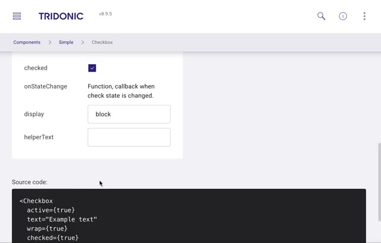
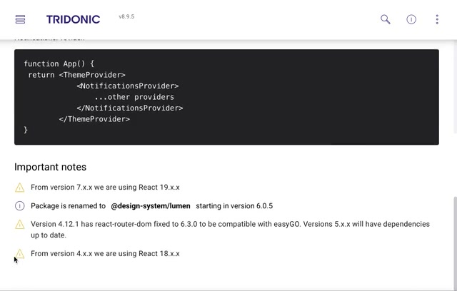

One source of truth, from Figma to code
Why
Colour, type and spacing live as tokens generated from the Figma library into a React package on Tridonic's private registry, and every component page links back to Figma.
Trade-off
A token pipeline takes longer to set up than a shared Figma file, but it's the only way a change reaches every product without a manual hand-off.

